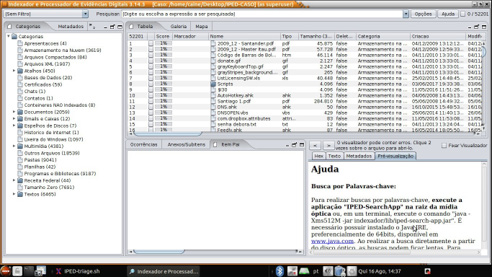
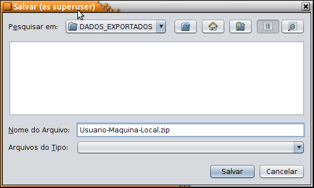

A Exploração de Documentos e Mídias (Domex ou Document and Media Exploitation) é um processo que visa identificar, coletar e explorar documentos físicos e dados provenientes de mídias e dispositivos computacionais ao longo das ações de busca, arrecadação e apreensão, com o propósito de obter provas de materialidade, autoria e circunstâncias do crime objeto da investigação.
O Domex encontra-se inserido no contexto maior de Sitex (Site Exploitation). Assim, o processo de identificação, coleta e exploração que caracteriza o Domex pode ser aplicado a qualquer objeto que contenha dados de interesse para investigação.
O grande volume e a diversidade das fontes de dados e informações encon tradas durante as buscas são um desafio cada vez maior para as investigações policiais. A arrecadação e a posterior apreensão de um elevado volume de dados e materiais não relacionados ao objeto da investigação dificultam a identificação de informações relevantes para a investigação e têm impacto negativo no prazo para a realização de exames periciais, quando necessários, e conclusão das investigações, inviabilizando o aproveitamento do princípio da oportunidade.
Por isso, o processo de Domex se inicia ainda no planejamento das operações, quando são definidos critérios e procedimentos visando a maximizar a eficiência e a eficácia da exploração de documentos e mídias, bem como estratégias a serem adotadas nas fases de busca, processamento e exploração do material. Durante todo o processo, são dedicados cuidados especiais à manutenção da cadeia de custódia, à identificação da origem das informações utilizadas e à preservação da integridade dos dados coletados.
Um procedimento chave do Domex é a triagem do material. A triagem é a seleção do material de interesse e dos dados relevantes, descartando o excesso de material porventura arrecadado. No caso de dados computacionais, o processo de triagem pode ser realizado com o apoio de ferramentas de software adequadas à indexação e pesquisa dos dados, resultando em um conjunto menor e de maior qualidade de materiais que será processado e explorado de forma mais célere e produtiva.
É importante constar na decisão judicial a autorização expressa de exploração do material de interesse no local das buscas a fim de que sejam arrecadados apenas os itens relevantes para a investigação.
Ressalte-se que a exploração do material durante as buscas “pressupõe a disponibilização de informações sobre a investigação para a equipe que realizará a exploração, sendo recomendável, por exemplo, a realização de briefings mais detalhados e que o Documento Suporte contenha dados suficientes para o cum primento do mérito da ação”15.
Nas seções seguintes deste caderno didático, são apresentadas as fases do processo de Domex, do planejamento até a exploração do material arrecadado, além de considerações técnicas sobre o manuseio de mídias e dispositivos computacionais e preservação da integridade dos dados ao longo do processo.
É necessário que o Domex esteja inserido no contexto do planejamento na ação de um eventual cumprimento de mandado de busca, com o fim de ponderar corretamente os custos e benefícios das ações de exploração previstas, de modo a racionalizar o uso dos recursos humanos e técnicos necessários e evitar que essas ações sejam infrutíferas ou superdimensionadas. Para isso, deve-se designar um responsável para atuar desde o planejamento até a conclusão das explorações pós-buscas (Instrução Normativa n.º 299/2025-DG/PF).
A previsão de exploração do material pela equipe de cumprimento de manda dos pode trazer vantagens, facilitando a triagem do que foi apreendido pela equipe de investigação, podendo acelerar as atividades de análise pós-deflagração e até mesmo auxiliar na representação por novas medidas cautelares. Por outro lado, deve-se ter em mente a necessidade de haver condições de tempo e de logística para permitir que essa exploração seja bem-feita16.
No contexto do Domex, a participação da área técnico-científica (Utecs, Setores Técnico-Científicos – Setecs, Diretoria Técnico-Científica – Ditec) no planejamento envolve a escolha do método e das ferramentas de hardware e software adequadas para o enfoque a ser dado (estratégia) à ação em local de interesse e às orientações a respeito das técnicas, táticas e procedimentos que serão empregados para atenderem ao mérito da ação em cada tipo de local, além de identificar riscos e reduzir a chance de imprevistos técnicos, bem como atuar em conjunto com a equipe de investigação originária para definir perfis de processamento adequados para a triagem de dados e, excepcionalmente, definir termos de pesquisa.
Todos aqueles que participarem do planejamento das atividades de Domex deverão ter conhecimento do objeto da investigação e quais as provas necessárias para alcançar os elementos de autoria, materialidade e circunstâncias que permi tam reconstituir o fato investigado da forma mais próxima da verdade real. Além disso, dados específicos sobre as pessoas e empresas relacionadas ao fato sob
Manual de Planejamento Operacional, p. 102.
Manual de Planejamento Operacional, p. 102. apuração devem ser disponibilizados para que o responsável técnico da atividade analise a eventual necessidade de definir um conjunto de termos de busca a serem utilizados no software de pesquisa para identificação rápida de dados de interesse.
Com relação aos locais de interesse para a investigação (busca e apreensão, local de crime etc.), diferentes ambientes requerem diferentes estratégias para a identificação e coleta de documentos e mídias. Residências e empresas de variados portes apresentam desafios próprios que podem restringir as opções de triagem e de coleta dos dados. Em locais de maior porte, cujo parque tecnológico é mais complexo, pode haver a necessidade de convocar o auxílio do setor de informática da própria empresa para obter acesso a sistemas internos, coletar dados ou gerar relatórios. Nesse caso, pode-se optar por emitir os relatórios de interesse de um sistema específico da empresa em vez de arrecadar os servidores que hospedam tal sistema. No primeiro caso, os dados estarão disponíveis para exploração imediatamente, enquanto no segundo caso, deverão passar por perícia complexa, com maior prazo de conclusão.
Assim, de posse de informações sobre o perfil de cada local e das pessoas relacionadas ao ambiente-alvo, o responsável técnico da atividade de Domex poderá realizar a análise de risco do local, indicando a possibilidade de perda de dados por ação das pessoas em torno do fato investigado ou indicar a neces sidade de participação de peritos criminais de informática em locais de maior complexidade. Cabe também ao responsável técnico avaliar a viabilidade técnica de realização de exploração dos dados no local de interesse. Essa exploração depende de recursos computacionais imprevisíveis, já que utiliza computadores do próprio local, o que tem impacto direto sobre a duração da busca e coleta.
Importante destacar que a possibilidade de perda de dados pode ocorrer tanto em função da ação das pessoas em torno do fato investigado quanto da exploração dos dados no local de interesse. Aparelhos celulares e SSDs, quando ligados, realizam tarefas de manutenção em segundo plano (garbage collection, flush, purge) que podem resultar na exclusão permanente de dados, e isso deve ser ponderado na análise de riscos durante o planejamento.
Considerando o volume esperado de material a ser explorado, a equipe de investigação pode definir núcleos prioritários de pessoas e empresas que exijam maior rigor na exploração dos dados e documentos, definindo o perfil de proces samento dos dados a ser empregado segundo a ordem de prioridade estabelecida.
No caso de triagem e exploração na unidade policial envolvida na deflagração da operação, deve-se garantir a disponibilidade de recursos na base, tais como espaço físico para as equipes, computadores e softwares para processamento e exploração dos dados e espaço de armazenamento dos dados selecionados, considerando a quantidade de equipes envolvidas na ação. Nesse ambiente preparado de triagem, a orientação e auxílio de peritos criminais da área de informática devem ser considerados, a fim de assegurar a eficácia da própria triagem realizada pelos policiais das equipes projetadas.
Cabe salientar que, nas várias fases do Domex, equipes distintas podem atuar na coleta e processamento dos materiais ou uma mesma equipe pode realizar o processo do início ao fim. Essa definição dependerá do tamanho da operação, do número de policiais envolvidos e da necessidade de especialização de determinada atividade, como, por exemplo, a tradução de textos.
É importante que a equipe de busca seja capaz de identificar e manusear os tipos de material que provavelmente serão encontrados, além de ser capaz de realizar os procedimentos de triagem, seja no local ou na base. Por isso, é importante que os policiais recebam capacitação continuada no tema. Caso necessário, ações de treinamento para nivelamento dos procedimentos de coleta e manuseio podem ser realizadas nos dias anteriores às ações.
Nesse contexto, é necessário instruir as equipes sobre o processo específico a ser adotado por cada uma delas. Por isso, a participação do responsável técnico da atividade de Domex na instrução das equipes é essencial. Considerando que a exploração no local de interesse visa a obter elementos de prova que indiquem a autoria, materialidade e circunstâncias do fato típico sob apuração, também é importante indicar de forma clara aquilo que não é escopo da investigação policial e, portanto, não deve ser arrecadado. De posse das informações para instruir as buscas e do material de apoio, as equipes poderão realizar a próxima fase do processo: a busca e coleta de documentos e mídias.
Os procedimentos policiais em local de interesse são regidos, na Polícia Federal, pela Instrução Técnica n.º 02-DICOR/PF, de 20 de dezembro de 2018, e foram objeto de maior aprofundamento em tópico próprio. Aqui serão ressal -tadas as necessidades específicas relativas a cuidados próprios da atividade de exploração de documentos e mídias.
A coleta e o manuseio apropriados de documentos e mídias encontrados nos locais de busca são essenciais para o sucesso do processo de Domex. Esse é o início da cadeia de custódia de materiais que poderão ser utilizados para fins de esclarecimento dos fatos em apuração. A partir do registro adequado da origem do material e de todo o seu caminho nas fases posteriores, torna-se transparente a todos os atores do sistema de justiça criminal a proveniência das informações produzidas nos relatórios de análise e nos laudos periciais.
Após a entrada da equipe no local, é preciso estar atento a qualquer tentativa de ocultar, adulterar ou destruir dados e documentos. Para isso, deve-se impedir que pessoas estranhas à equipe policial projetada manipulem documentos e equipamentos de informática presentes no local. Aparelhos celulares, CDs, DVDs, pen drives e mídias de armazenamento de tamanho reduzido são fáceis de serem ocultados.
Alguns materiais podem ser danificados ou terem seus dados apagados em questão de segundos. Outra providência para a preservação dos dados consiste em interromper conexões de rede eventualmente existentes, por meio das quais dados podem ser apagados remotamente. Isso inclui desligar roteadores de wi-fi e de internet e colocar os celulares em modo avião (ou off-line), seguindo as orientações da equipe de coordenação.
O registro cuidadoso do local antes de manusear qualquer material é funda mental para documentar com precisão as informações sobre onde e como ele foi encontrado. É importante identificar os ambientes que compõem o local. No caso de empresas, deve-se identificar o nome da sala, sua numeração e andar, e o nome dos funcionários de cada estação de trabalho. Nas residências, é importante identificar as pessoas associadas a cada cômodo e ao seu conteúdo.
É necessário também verificar os arredores do local para o caso de tentativa de ocultação e destruição de documentos e mídias, como, por exemplo, sob as janelas, nos telhados, vasos sanitários e até nas caixas d’água. Fotografias e vídeos também podem ser utilizados para registrar indícios de ocultação, danos ou destruição de objetos de interesse.
Se durante a exploração no local forem encontrados materiais perigosos ou contaminantes, é necessário comunicar à coordenação da operação para serem realizados procedimentos específicos por equipes capacitadas, tais como a seleção de material de interesse para a investigação.
Ao contrário do que muitos pensam, uma operação bem-sucedida não é aquela que apreende o maior número de materiais e equipamentos existentes num local, mas sim aquela que tem foco e seleciona apenas o que é importante para o caso em questão. Para isso, é fundamental utilizar as informações disponibilizadas na instrução das equipes para orientar a busca, a arrecadação, a exploração e a apreensão de material. A título de exemplo, a Tabela I apresenta alguns dos tipos de materiais mais comuns que podem ser objeto da busca, conforme o mérito da investigação.
Tabela 1 – Tipos de materiais para Domex.
| Tipo de material | Exemplos |
|---|---|
| Documentos de identificação | passaporte; carteira de habilitação; carteira de identi dade; título de eleitor. |
| Documentos pessoais | agendas; fotografias; cartas e anotações. |
| Outros documentos | notas fiscais, recibos, duplicatas; boletos bancários; guias de pagamento; extratos bancários; cheques; documentos contábeis; editais; contratos. anotações com indicação de contas em criptomoedas. |
| Mídias removíveis | cartões de memória; pendrives; discos óticos (CD, DVD, Blu-Ray); fitas magnéticas (ex.: fitas de backup); fitas de vídeo e áudio. |
| Dispositivos computacionais | computadores de mesa; notebooks; telefones celulares; tablets; câmeras fotográficas; aparelhos de GPS. |
| Outros equipamentos | drones; consoles de videogame; gravadores de circuitos fechados de TV (DVRs); central multimídia de veículos. |
Assim, considerando as prioridades e os objetivos da busca definidos no planejamento, o material arrecadado deve ser avaliado, ainda no local, quanto à sua pertinência e relevância, bem como à priorização do seu processamento e análise. Dessa forma, por exemplo, os dados de um telefone celular de um suspeito prioritário poderão ser disponibilizados para exploração e análise com maior celeridade ao invés de ficarem aguardando o processamento de itens de menor interesse.
Há casos em que o mandado de busca abrange toda a empresa, apesar do interesse principal estar no seu setor de contabilidade, por exemplo. Nesses casos, deve-se atentar para a arrecadação dos computadores que contenham os dados de interesse, como servidores e computadores utilizados por membros da diretoria ou da presidência.
Para auxiliar o processo de triagem do material a ser arrecadado, é possível contar com o apoio dos órgãos parceiros que participaram da investigação, a exemplo da CGU, do IBAMA ou do INSS. Nesse caso, é essencial a autorização judicial para a participação dos servidores de órgãos externos durante o cumpri -mento dos mandados, os quais poderão auxiliar as equipes projetadas na seleção do material mais pertinente para a investigação.
Computadores de mesa (desktops) são os mais comumente encontrados em empresas, porém os computadores portáteis (notebooks/laptops) também se tornaram bastante comuns em todos os ambientes.
As informações de interesse estão geralmente armazenadas na memória per manente desses equipamentos, ou seja, no disco rígido (HD). Devido à presença crescente de criptografia baseada em hardware, deve-se arrecadar o equipamento por inteiro, notebooks/laptops e gabinetes, no caso de desktops. Criptografias como BitLocker, que utilizam hardware TPM (Trusted Platform Module), vêm se tor nando padrão de fábrica para computadores com o sistema operacional Windows, e, nesses casos, apreender somente o disco rígido irá inviabilizar a extração dos dados pela Perícia Criminal. Somente em casos em que for possível verificar que o disco rígido (HD) não está criptografado, pode-se retirá-lo do gabinete ou do computador portátil e apreendê-lo separadamente. Sempre que possível, deve ser realizado procedimento de recuperação da chave do Bitlocker ou utilizado o recurso “Suspender Proteção do Bitlocker”.
Dispositivos de entrada e saída de dados – impressoras, teclados, monitores e outros periféricos – não devem ser apreendidos, exceto se houver algum questionamento específico sobre seu uso. Por exemplo, uma impressora pode ser necessária para que a perícia determine se um documento específico foi impresso nela, tal como no caso de papel moeda falso.
ATENÇÃO
Em perícia forense digital, a regra geral é NÃO desligar um computador portátil apreendido que esteja ligado. Desligá-lo de forma abrupta pode causar a perda de evidências críticas e irrecuperáveis.
E isso decorre da necessidade de preservação da memória volátil (RAM), que armazena informações temporárias que podem ser imprescindíveis à investigação, tais como:
a) Dados de processos e programas em execução.
b) Chaves de criptografia e senhas de acesso.
c) Comunicações recentes (chats, e-mails não salvos).
d) Histórico de atividades e comandos recentes.
Deste modo, deve-se inicialmente isolar o aparelho de qualquer rede (desligar o Wi-Fi e desconectar o cabo de rede). Em seguida, fazer uso de ferra mentas e métodos forenses de aquisição de memória volátil antes de qualquer outra ação.
Após a ação de exploração, os computadores a serem apreendidos devem ser preferencialmente colocados em estado de hibernação, para manterem seu estado atual. Caso não seja possível, estes devem ser desligados. Se possível, deve-se encaminhar com os cabos de conexão e carregadores.
Com o intuito de auxiliar as equipes projetadas a executarem as ações de exploração de dados computacionais em locais de interesse, Peritos Criminais Federais desenvolveram uma ferramenta específica para esse fim.
O IPED Triage17 é uma adaptação da ferramenta pericial IPED, integrada a uma distribuição forense do sistema operacional Linux. O IPED Triage foi criado para permitir a realização de triagens rápidas em equipamentos de informática e posterior extração dos dados selecionados. Ao ser executado o modo Triage, o IPED passa a analisar apenas pastas e formatos de arquivos previamente definidos, ignorando outros tipos menos relevantes para a fase inicial da investigação, cujo objetivo é reduzir o tempo de execução em relação à versão padrão.
No modo Triage, o IPED não executa o reconhecimento de OCR e não recupera fragmentos de arquivos apagados, desse modo, não são executadas rotinas de carving (recuperação de dados apagados ou fragmentados no disco), o que reduz significativamente a duração da análise inicial.
O computador que se deseja explorar deve ser inicializado usando um pen drive com o IPED Triage, gravado com um sistema Linux. Após a inicialização desse sistema, deve ser executado o atalho “IPED-TRIAGE” da área de trabalho, que automaticamente montará os discos rígidos do computador no modo somente para leitura. Essa ação prevenirá a alteração, ainda que acidental, dos dados originais contidos no computador.
Após essa montagem, é feita uma seleção automática de quais pastas serão passadas como entrada para o IPED, que depois exibirá uma interface para triagem dos arquivos, como mostrado na figura a seguir.
https://wiki.ditec.pf.gov.br/SEPINF:IPED-Triage

Figura 1 - Tela do IPED em perfil Triage
Para facilitar a manutenção da cadeia de custódia, os arquivos selecionados por meio do IPED Triage podem ser extraídos e gravados em um contêiner compactado do tipo ZIP, cujo hash é calculado e apresentado para o usu ário ao final do pro-cesso. Esse contêiner ZIP deve ser gravado na partição “DADOS_EXPORTADOS” do próprio pen drive ou ainda em um HD externo. O hash, como visto anteriormente, deve ser registrado no auto circunstanciado e no auto de apreensão.

Figura 2 - Ao final da exploração, o IPED Triage oferece a
opção de gravar os arquivos selecionados em um contêiner
compactado do tipo ZIP
Figura 3 - Após extrair e gravar os arquivos selecionados em um contêiner ZIP, o IPED
Triage apresenta o hash do arquivo ZIP e o caminho onde ele foi gravado
Esse processo deverá ser repetido para cada computador que se deseje analisar. Lembrando que os arquivos ZIP gerados para cada máquina devem ser bem identificados de forma a não causar confusão quanto à sua origem.
Apesar da facilidade de uso, o sucesso na execução do IPED Triage depende da configuração da máquina a ser explorada, podendo levar um tempo considerável. Deve-se, como frisado anteriormente, evitar situações que coloquem a equipe em risco ou que possam comprometer a integridade do material a ser obtido nos procedimentos de arrecadação.Importante ressaltar que, via de regra, o uso do IPED Triage não é o mais indicado para buscas e apreensões de casos envolvendo abuso sexual infantojuvenil, em que normalmente é necessário inspecionar arquivos de imagens e vídeos. Para esses casos, destacam-se duas ferramentas:
Mídias removíveis ou avulsas (pendrives, CDs, DVDs, cartões de memória, chip de celular) e dispositivos móveis (tablets, celulares, smartphones) também podem conter dados relevantes e devem ser arrecadados segundo os critérios estabelecidos no planejamento.
Além disso, é preciso atenção para mídias de armazenamento pouco usuais, tais como máquinas fotográficas, filmadoras, gravadores digitais e pen drives em formatos incomuns (chaveiros, canivetes, bichos de pelúcia etc.). Sempre que possível, quando uma mídia pouco usual for apreendida, devem ser arrecadados também seus acessórios, como cabos para leitura de dados.
Deve ser evitada a apreensão de mídias que claramente não possuam dados relevantes para a investigação, como CDs e DVDs originais contendo músicas, filmes ou instalação de programas, por exemplo.
Fitas de backup, por conterem grande volume de dados que muitas vezes já está contido nos demais materiais selecionados, só devem ser arrecadados caso haja algum interesse específico, como um sistema ou intervalo de tempo, definido pela coordenação da operação. Por exigirem hardware específico, sempre que possível, deve-se realizar a cópia dos dados de interesse utilizando o equipamento disponível no próprio local ou, em último caso, arrecadar também a unidade de leitura de fitas.
Aparelhos celulares, tablets e smartphones também costumam ser apreendidos em operações dessa natureza. Tanto no cartão SIM (chip) do celular quanto na memória do aparelho podem estar armazenadas informações importantes para o caso em questão. Esses equipamentos devem ser colocados em modo avião assim que possível pelo primeiro policial que manuseá-los, de forma a assegurar a integridade dos dados e da cadeia de custódia.
É importante apreender também os carregadores e cabos de transferência de dados de tais dispositivos.
Deve-se verificar a existência de senhas para acesso a esses aparelhos. Sempre que possível, as senhas devem ser obtidas com os detentores do aparelho e anotadas no auto circunstanciado de busca e arrecadação para, posteriormente, serem registradas no Termo de Apreensão.
Ressalte-se, entretanto, que a anotação da senha dos aparelhos celulares nos documentos produzidos durante o cumprimento dos mandados tem sido alvo de questionamento judicial e passível de gerar nulidade da prova, motivo pelo qual deve-se respeitar o “Aviso de Miranda”18e, sempre que possível, fazer constar o consentimento do proprietário quanto ao fornecimento da senha do seu aparelho.
Outro ponto de atenção é a possibilidade de bloquear o acesso a aplicativos específicos com uma senha separada. Assim, além da senha de desbloqueio do aparelho, é importante verificar se existem outras senhas para acessar aplicativos importantes, como o WhatsApp.
De acordo com o Manual de Planejamento Operacional19, é possível identificar cinco cenários distintos no momento da apreensão do aparelho celular, descritos a seguir. É importante ressaltar que, em função da contínua evolução
O Aviso de Miranda, mais conhecido no Brasil como Direitos de Miranda, é um con -junto de direitos que a polícia dos Estados Unidos deve ler a um suspeito antes de qualquer interrogatório sob custódia. Tais direitos foram estabelecidos pela Suprema Corte dos EUA no caso histórico Miranda v. Arizona (1966) e incluem: a)
O direito de permanecer em silêncio. b)
A advertência de que tudo o que disser pode e será usado contra ele em um tribunal. c)
O direito de ter um advogado presente durante o interrogatório. d)
A garantia de que, se não puder pagar por um advogado, um será fornecido pelo Estado. e)
O objetivo é garantir que o suspeito esteja ciente de seus direitos constitucionais antes de responder a qualquer pergunta.
Manual de Planejamento Operacional, pp. 182-185 (anexo). dos mecanismos de segurança desenvolvidos pelos fabricantes e o consequente desenvolvimento de novas capacidades das ferramentas de extração, tais cenários estão sujeitos a alterações a qualquer momento. Assim, é necessário sempre se informar se houve alteração nos procedimentos preconizados antes de participar de ações de Busca e Apreensão envolvendo celulares. 1º CENÁRIO: APARELHO LIGADO E INVESTIGADO FORNECE A SENHA
a) Testar se a senha funciona;
b) Colocar o aparelho em modo avião. Confirmar se as conexões foram
efetivamente desabilitadas: wi-fi, bluetooth etc;
c) Verificar a presença de senhas específicas de aplicativos de interesse à
investigação (WhatsApp, Wickr, Telegram etc.) e descrevê-las nos docu
mentos de apreensão dos materiais;
d) Retirar o(s) cartão(ões) SIM e afixá-lo(s) com etiqueta adesiva no próprio
aparelho, evitando o contato da cola da fita com os contatos do cartão SIM;
e) Desligar o aparelho;
f)
Registrar a senha para o caso de necessidade de utilização em outro
equipamento ou aplicativo.
ATENÇÃO!
Há métodos de desbloqueio do aparelho (também conhecidos como Smart Lock/Unlock) nos quais não é exigida a senha de acesso, caso o dispositivo esteja em uma determinada localização geográfica (GeoFence) ou com conexões sem fio pré-estabelecidas (Wi-Fi ou bluetooth) ativas. Portanto, considerando que os mandados de busca e apreensão são cumpridos em residências ou escritórios dos donos dos aparelhos eque tais ambientes normalmente podem se enquadrar em uma dessas condições de desbloqueio sem senha (condições essas que não ocorrerão após a apreensão dos equipamentos, dentro das bases de extrações avançadas de apoio policial), a presença de senha deve ser verificada nas con figurações do aparelho.
Ter acesso à senha do dispositivo pode permitir desbloquear outros telefones do mesmo proprietário e acessar mais informações.
Não é recomendável remover a senha de bloqueio do dispositivo no local, por se tratar de ação com potencial de perda de dados e/ou alteração de artefatos relevantes. Exemplo: em iPhones, a remoção da senha pode ocasionar apaga mento de informações do Apple Wallet.
2º CENÁRIO: APARELHO LIGADO E INVESTIGADO NÃO FORNECE A
SENHA
a) Caso o dono esteja utilizando o aparelho, deve-se tentar realizar a
apreensão do dispositivo antes que seja possível efetuar o bloqueio.
Tentar retirar a opção de bloqueio por senha do aparelho, caso possível.
b) Verificar se outras pessoas na residência têm o conhecimento da senha
do aparelho em questão ou de outros aparelhos e dispositivos móveis
(como tablets).
c) Retirar o(s) cartão(ões) SIM e afixá-lo(s) com etiqueta adesiva no próprio
aparelho, evitando o contato da cola da fita com os contatos do cartão SIM.
d) Colocar o aparelho em modo avião. Confirmar se as conexões foram
efetivamente desabilitadas: wi-fi, bluetooth etc;
e) Não desligue o aparelho.
f) Caso o alvo apresente grande valor operacional, manter o aparelho
ligado com o auxílio de bateria externa (Power Bank);
g) Proceder com o acondicionamento do material em uma faraday bag ou
embrulhar em folha de papel alumínio.
ATENÇÃO!
É possível que os dispositivos deste cenário, que já tenham sido desbloqueados pelo usuário ao menos uma vez após seu reinício, possam ter seus dados acessados por meio da extração AFU (After First Unlock). Essa técnica se baseia no fato de as chaves de criptografia poderem ser encontradas na memória após o primeiro desbloqueio, o que permite o acesso aos arquivos armazenados.
Nessa situação, a equipe que participa da operação de busca deve avaliar se é viável manter o aparelho ligado, sem a retirada dos cartões SIM e acondicionando o aparelho em uma faraday bag, com sua entrega à unidade de apoio de extração com a maior brevidade possível, antes que a bateria tenha sua carga esgotada ou que algum mecanismo de proteção realize o bloqueio automático, o que pode ocorrer em poucas horas após o aparelho ficar sem sinal.
Versões mais recentes do iOS e Android têm mecanismos de segurança que reiniciam o aparelho ou bloqueiam a tela após algumas horas do último desblo queio ou do momento em que ficam offline, podendo perder o estado AFU. Assim, quanto antes o aparelho alvo for submetido à ferramenta de extração, maior a possibilidade de sucesso no desbloqueio.Se for usada uma bateriaexterna, ela deve ser acondicionada juntamente como celular dentro do dispositivode proteção eletromagnética, pois, caso contrário,o cabo de carregamento poderá funcionar como uma antena. 3º CENÁRIO: APARELHO DESLIGADO E INVESTIGADO FORNECE A
SENHA a) Retirar o cartão SIM e afixá-lo(s) com etiqueta adesiva no próprio aparelho, evitando o contato da cola da fita com os contatos do cartão SIM. b) Ligar o aparelho. c) Testar a senha. d) Seguir os passos dos cenários anteriores para aparelhos ligados, esco lhendo o cenário adequado para o caso de a senha fornecida estar correta ou incorreta. Alguns aparelhos podem estar configurados para não desligar ou entrar em modo avião sem a digitação da senha. Assim, tal possibilidade deve ser ponderada antes de se ligar o aparelho para testar a senha, pois ela implicará na necessi dade de uso de faraday bag e powerbank para acondicionamento do aparelho. Além disso, enquanto estiver ligado, o celular fica suscetível ao recebimento de comandos remotos de wipe. 4º CENÁRIO: APARELHO DESLIGADO E INVESTIGADO NÃO FORNECE
A SENHA No caso de o dispositivo estar desligado e o dono não fornecer a senha do aparelho, recomenda-se: a) Retirar o(s) cartão(ões) SIM e afixá-lo(s) com etiqueta adesiva no próprio aparelho, evitando o contato da cola da fita com os contatos do cartão SIM. b) Verificar se outras pessoas na residência têm o conhecimento da senha do aparelho em questão ou de outros aparelhos e dispositivos móveis (como tablets), anotando possíveis senhas candidatas para teste em ambiente pericial controlado. 5º CENÁRIO: APARELHO LIGADO E SEM SENHA APARENTE a) Verificar se o aparelho possui senha ativada em suas configurações, pois o aparelho pode estar em um ambiente com smartlock ativado, mantendo o aparelho desbloqueado enquanto se encontra naquele local físico ou conectado a um dispositivo presente apenas no local da Busca e Apreensão. b) Caso seja verificada a presença de senha nas configurações, mesmo com o aparelho desbloqueado, e o investigado não a fornecer, o policial deve:
b.1) Tentar manter o aparelho ligado, tocando sua tela de tempos em
tempos, evitando assim o bloqueio automático
b.2) Conectar o aparelho a uma fonte de energia externa (Power Bank),
evitando assim o descarregamento da bateria.
b.3) Retirar a opção de autobloqueio, caso possível, e de desligamento
da tela.
b.4) Colocar o aparelho em modo avião. Confirmar se as conexões
foram efetivamente desabilitadas: wi-fi, bluetooth etc.
b.5) Levar o aparelho imediatamente à unidade de apoio de extração
de dados.
Nos casos estabelecidos no planejamento, bem como quando houver invia bilidade legal ou técnica à arrecadação de equipamentos e mídias, poderão ser efetuadas cópias dos dados existentes no local. A extração de dados pode ser realizada ainda para reduzir o volume de material apreendido.
Esse tipo de apreensão é indicado principalmente quando os dados estão armazenados em computadores de grande porte ou em algum repositório na rede da empresa. Em algumas ocasiões, pode-se, por exemplo, executar a cópia da caixa postal de e-mails de um usuário específico, evitando a apreensão de todo o servidor de mensagens da empresa.
A extração de dados no local só deve ser realizada quando houver:
a) segurança operacional;
b) disponibilidade de mídias de tipo e capacidade adequados para
armazenar os dados coletados;
c) disponibilidade de equipamentos e softwares adequados; e
d) disponibilidade de recursos humanos para realização das cópias
em tempo hábil. Dependendo do volume de dados, esse processo
pode levar horas ou dias.
É importante ainda levar em consideração que a extração de um conjunto específico de dados de uma mídia computacional implica na perda de informa ções sobre o seu contexto, o que pode dificultar o esclarecimento de eventuais questionamentos acerca de circunstâncias relacionadas a eles.
Por exemplo, um documento contido em um disco rígido com uma instalação do sistema operacional Windows possui diversos registros associados que permitem identificar como ele foi criado e quem era o usuário do sistema naquele momento. Se ele tiver sido copiado para o HD, os registros podem indicar de onde ele foi recebido.
Caso seja feita a extração do documento em vez da apreensão integral de seu suporte, tudo isso é perdido, devendo ser ponderado se haverá impacto na robustez probatória do documento obtido.
Registra-se que a mídia que irá receber os dados deve estar limpa, sem resquícios de dados anteriores, de preferência, original de fábrica (“virgem”).
Os dados coletados de cada computador ou de outras mídias devem estar bem identificados quanto à sua origem. É importante não misturar dados de com putadores, usuários ou salas distintas. Caso contrário, torna-se difícil determinar com segurança a proveniência desses dados.
Os dados a serem apreendidos devem ser submetidos a funções unidirecionais de resumo (hash), visando, caso necessário, a futuras verificações de integridade. Idealmente, o hash dos dados apreendidos deve constar no auto circunstanciado da ação. O conceito de funções de hash e o seu funcionamento constam da matéria relativa à criminalística.
A identificação adequada dos materiais no local de busca será utilizada ao longo de todo o processo para o controle e rastreamento do material apreen dido. Por isso, é importante registrar no auto o local exato em que cada item foi encontrado.
A descrição dos materiais deve ser detalhada de forma a identificar univoca mente o item apreendido. Para isso, são utilizados, além das características externas como marca, modelo e cor, os números de série dos equipamentos e mídias.
No caso de documentos, deve-se descrever sua aparência geral e quaisquer títulos ou dados que permitam distingui-los. Preconiza-se que documentos em papel encontrados em móveis, caixas, pastas ou cômodos distintos devem permanecer separados em diferentes embalagens. Assim, não devem ser misturados documen tos de ambientes distintos que podem estar associados a pessoas diferentes. Todo cuidado deve ser tomado para não danificar, adulterar ou desfigurar documentos. Etiquetas identificadoras devem, preferencialmente, ser afixadas sobre o equipa mento em si, não sobre as embalagens. Anotações adicionais, como senhas de sistemas e códigos de acesso de celulares, devem constar no auto circunstanciado, no termo de apreensão e na etiqueta do material.
A transferência de material arrecadado para a base exige alguns cuidados relativos à embalagem e ao transporte. Uma embalagem adequada ajudará a preservar os materiais para exploração, futura análise ou mesmo eventual perícia. Para isso, a equipe deve utilizar o material de apoio disponibilizado pela coordenação da operação.
Tanto os documentos em papel quanto as mídias de armazenamento de dados são considerados materiais frágeis, tanto em termos mecânicos quanto eletrônicos e magnéticos. Por isso, devem ser manuseadas com cuidado para evitar danos que causem a perda de dados.
Sempre que possível, os materiais devem ser separados em embalagens diferentes, dando preferência ao uso de plásticos transparentes como elementos de embalagem. Discos rígidos, por exemplo, devem ser acondicionados em embalagens próprias. Caso tais embalagens não estejam disponíveis, deve-se fazer algum tipo de proteção improvisada, tal como papelão ou plástico-bolha.
Os cabos de dados, carregadores e demais acessórios devem ser embalados juntamente com o equipamento correspondente. Os discos rígidos removidos de um mesmo gabinete devem ser embalados e lacrados em um único volume. Mídias removíveis podem ser agrupadas por tipo, desde que não se misturem mídias provenientes de ambientes distintos ou relacionadas a diferentes pessoas. O importante é que tudo fique registrado no auto circunstanciado relativo à ação.
Com base nas informações passadas no planejamento, a exploração dos documentos visa identificar e extrair informações de interesse para a investigação ainda durante o desencadeamento da ação. Por exemplo, informações de contato ou localização de determinada pessoa ou que apontem para novos locais a serem explorados, ou mesmo que indiquem atualidade no relacionamento ou nos contatos entre integrantes de suposta associação criminosa.
Desse modo, é essencial que as informações mais relevantes da investigação constem no documento suporte e sejam exploradas no briefing para que as equipes consigam realizar a triagem e a exploração do material apreendido com a maior acuracidade possível.
Caso haja previsão no planejamento da operação, documentos que necessitem de tradução devem ser separados. Uma equipe de tradução pode permanecer disponível para auxiliar na triagem desses materiais.
Os documentos podem ser digitalizados com o uso de um scanner e armaze nados em meio digital. Deve-se assegurar que a cópia tenha qualidade suficiente e que permita o reconhecimento óptico de caracteres (OCR) para extrair o texto da imagem do documento. Esse texto pode ser indexado e pesquisado por ferramentas de análise. Cabe lembrar que o processo de OCR não é perfeito, podendo ser necessário realizar, manualmente, correções no texto identificado. Os documentos digitalizados devem ser armazenados separadamente dos dados coletados no local, para que não se confunda a sua origem.
Caso haja necessidade de algum esclarecimento pericial, como análise de assinaturas e adulterações, é importante que os documentos originais sejam apreendidos. Também, com base no que foi definido no planejamento da ação, pode ser necessário apreender material contendo assinaturas ou manuscritos para fins de exames periciais grafotécnicos.
Após a busca e coleta de equipamentos computacionais, mídias de arma -zenamento e dados, deve-se realizar a exploração propriamente dita. Em uma mesma operação policial, esses materiais podem ser explorados de maneiras distintas, dependendo da importância ou da relevância da atuação da pessoa física ou jurídica na prática de atos relativos aos fatos em apuração, do seu nível de conhecimento e sofisticação computacional, de quão amplas ou específicas são as informações que estão sendo buscadas, além do risco e das condições técnicas do local.
A disponibilidade de tempo, recursos humanos e recursos computacionais também devem ser levada em conta na escolha da abordagem de processamento e exploração dos materiais arrecadados.
Há, basicamente, quatro métodos de exploração de dados:
a) exploração e obtenção de dados no próprio local de busca;
b) arrecadação de materiais no local para triagem e exploração na base
policial;
c) apreensão dos materiais e disponibilização em um Sistema de Análise
Remota de Dados (SARD) ou similar; e
d) apreensão dos materiais e envio para exames periciais.
Os dois primeiros são os métodos mais rápidos, porém menos profundos.
O SARD permite combinar o conhecimento que os analistas possuem sobre o contexto da investigação com o conhecimento técnico da Perícia de Informática sobre o tratamento de artefatos digitais para potencializar os achados. Possibilita o uso de recursos adicionais como serviços de Inteligência Artificial para análise de imagens (ex: Abuso Sexual Infantojuvenil) e transcrição dos áudios do WhatsApp, verificação em bases de dados de arquivos conhecidos (KFF) para detecção de malware e material de Abuso Sexual Infantojuvenil. Mas exige uma infraestrutura de TI adequada para armazenamento, processamento e disponibilização remota de grandes volumes de dados.
O envio para a Perícia é o método mais demorado, dada a centralização das demandas em um número menor de policiais especializados, porém é o que apresenta os resultados mais profundos. Por meio de técnicas e ferramentas especializadas, busca:
Cada uma das opções apresenta vantagens e riscos associados, sendo possível adotar mais de uma dessas opções em uma mesma operação que envolva mais de uma ação de exploração em local de interesse. A equipe de investigação originária deve estar plenamente ciente dessas vantagens e riscos ao definir quais opções utilizar. É importante que a equipe de investigação estabeleça, previamente, palavraschave a serem buscadas durante a exploração de mídias computacionais, visando otimizar as triagens.